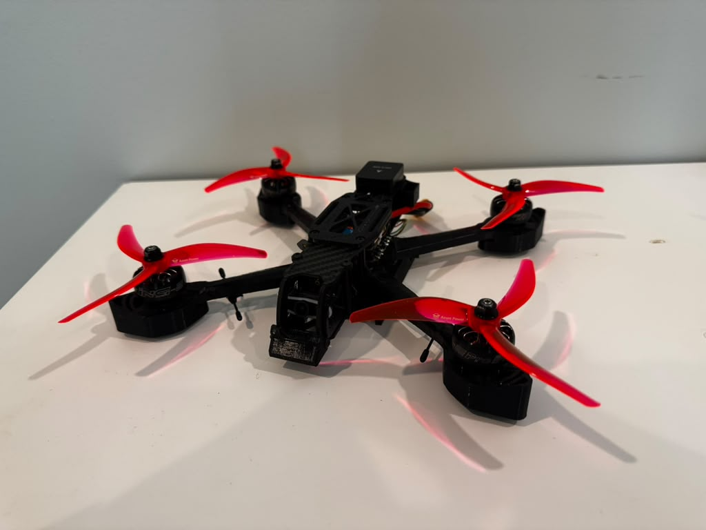
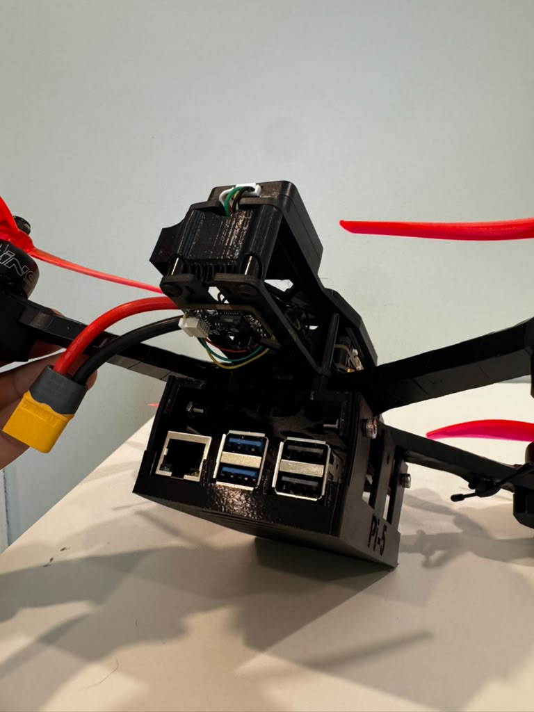

Personal UAV Development / Ongoing
Custom FPV Drone & UAV Development Platform
What began as recreational FPV flying grew into an interest in UAV development. I designed and assembled a custom quadcopter that could serve both as an FPV aircraft and a platform for sensor integration, wireless telemetry, and Python-based flight experiments.

From Flight Hardware to a Development Platform
After getting into FPV flying for fun, I became increasingly interested in how the aircraft could be programmed and extended. For my next build, I selected components that would support both recreational flight and development work, then assembled the propulsion, flight-control, communications, and sensing systems into one aircraft.
Flight Hardware
5-inch frame, 6S power, MicoAir H743 V2 flight controller, and 70A 4-in-1 ESC.
Communications & Sensing
ExpressLRS control and MAVLink telemetry, a RadioMaster transmitter, GPS, compass, and a downward-facing MicoAir MTF-02 module combining optical flow and range sensing.
I worked with both PX4 and ArduPilot; ArduPilot became the main firmware for the experimental platform. My work included firmware flashing, Mission Planner setup, parameter and flight-mode configuration, motor/ESC setup, and debugging UART peripherals and MAVLink communication.
I included the sensors needed for future navigation experiments from the outset. GPS provides an outdoor position reference, the compass provides heading information, and the downward-facing optical-flow and range sensors support investigation of motion relative to the ground and height above the surface.

I achieved indoor position hold using the downward-facing optical-flow and range-sensing module. This extended the platform beyond outdoor GPS-based flight to position-hold testing indoors.

How the Systems Connect
Bringing the Laptop into the Loop
Wireless MAVLink Communication over ExpressLRS
I established a bidirectional MAVLink connection using the ExpressLRS radio link and the transmitter’s TX Backpack. On the aircraft, the ArduPilot flight controller communicates with the ELRS receiver through a UART. The receiver exchanges MAVLink data with the transmitter module in my radio over the RF link. On the ground, the TX Backpack operates as a Wi-Fi access point; my laptop joins that network and exchanges MAVLink messages over UDP using pymavlink.
This creates a continuous communication path: aircraft telemetry passes through the ELRS receiver, radio transmitter, and Wi-Fi backpack to the laptop, while commands follow the reverse route to the flight controller. Integrating the connection meant bringing together the aircraft’s serial MAVLink interface, the ELRS telemetry transport, and the backpack’s Wi-Fi-to-UDP forwarding so laptop-based scripts could communicate with ArduPilot wirelessly.
MAVLink is a structured messaging protocol. At the application layer, telemetry messages describe vehicle state, while command messages identify an intended operation and its parameters. Working with this interface requires understanding target system and component IDs, command identifiers, flight modes, and the distinction between sending a request and observing the aircraft’s response.
Scripted Takeoff, Altitude, and Landing Tests
Using Python and pymavlink, I developed and tested basic flight sequences that commanded the aircraft to take off from its starting position, ascend to a specified altitude, and land. These experiments connected a laptop-defined sequence to the aircraft’s onboard flight-control system, with ArduPilot handling stabilization and execution of the requested flight behavior.
A Reusable Python Wrapper
Writing these sequences exposed how much low-level MAVLink detail was repeated in otherwise simple tasks. I built a Python wrapper class around pymavlink to encapsulate that complexity behind a clearer interface for common flight operations. This abstraction lets the experiment code express the intended behavior while keeping protocol-specific command construction within the wrapper, making subsequent scripts easier to read, reuse, and extend.
I have also investigated retrieving ArduPilot flight logs over MAVLink to reduce the need to remove the SD card between experiments.
What Works, and What Comes Next
- Built and flight-tested: a custom FPV quadcopter with ArduPilot, GPS and compass integration, a combined optical-flow/range module, and a custom Raspberry Pi mount.
- Established and tested: indoor position hold, laptop-to-aircraft MAVLink communication over ExpressLRS, Python takeoff/altitude/landing sequences, and a reusable pymavlink wrapper class.
- Future development: using the Raspberry Pi as an onboard companion computer to send flight commands to ArduPilot over MAVLink, then adding computer vision to recognize hand gestures and translate them into simple drone maneuvers.
- Research direction: using flight, RPM, IMU, and electrical telemetry to distinguish gradual propulsion degradation from normal battery sag and changing motor loads. Fault detection remains ongoing research.